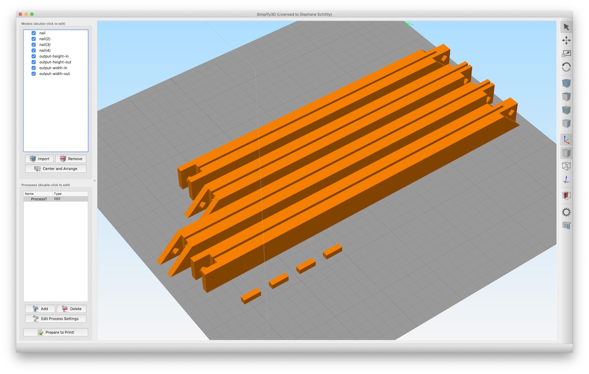

Customizable picture frame
Enter the dimensions of the picture in centimeters.
There's a 5mm margin all around (on the inside of the frame) included.
It's recommended to use a maximum of one decimal (so by increments of 0.1cm).
The maximum size is based on the print bed size: you can generate a frame in 4 parts if the length doesn't
exceed the print bed size (at 45 degrees), otherwise parts will be split in half (so 8 parts in total).
For example, on a 20x20cm print bed, the maximum frame size is 27*2 = 52cm.
Printing instructions
- A ZIP file will be created, it contains 2 or 4 pieces (depending on the size and the size of the printer)
generated to your dimensions and a file for the nail.
- Add the pieces in your slicer software. Duplicate the nail as many times as needed.
- Simplify3D will show an alert about the scale of the nail being wrong, you can ignore it (do not resize).
If you need to change the size of the nail manually, it's a rectangle with a length of 9mm and a side of
2.7mm
- This print requires a layer height of 0.2mm or less
- Use 5 top and bottom layers, and 2-3 perimeter shells. I found an 8% infill is a good compromise (using an
hexagonal pattern).
- Temperature is quite important here as the tolerances are very small.
Overheating the filament / bed will result in distortion, and pieces might not fit correctly.
I get good results when using PLA at 190C with hairspray on glass - bed heating is recommended to avoid
distortion. I use 50C on the first 6 layers.
- Print this set twice.
- When removing the pieces from the bed, lift them from their square side (angled corners are more fragile and can
easily break).
- Depending on the material, it might be better to glue the parts, or not use the nails at all.
- Make sure you have the assembly ready before adding the nails. Once put in place, you won't be able to remove
them.
This is how the parts for a half frame should look like for 4 parts (smaller than the print bed) - a complete
frame needs two of those:

This is how the parts for a half frame should look like for 8 parts (larger than the print bed) - a complete
frame needs two of those:
